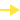
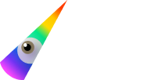

Становимся точкой входа в мир социально значимых цифровых продуктов
Наши ценности. Забота о пользователях: влюбляемся в проблему, а не в решение.
Забота о друг-друге: помогаем сокомандникам с обучением, оборудованием, иногда вместе ездим на море 🌊 и
кататься на лыжах ⛷🏂
История Muteit.app
Это первый продукт, который комьюнити UW взялась развивать. У Оли Найда появилась идея, мы её
подхватили. Вместе хотим заботиться о людях с синдромом «стеснительного мочевого пузыря»
Muteit.app


Почему объединились?
У каждого внутри сформировалась потребность в заполнении пустоты значимыми и реально помогающими людям
ценностями и действиями. Unicorn Witnesses это про путь. Команда это тоже про путь.
- Путь объединяет команду и комьюнити и делает одним целым.
- Ценности здоровья, экологии.
- Некоммерческое сотрудничество и независимость
А это наши голоса
Алексей Долгих
CTO, Quality assurance
Комьюнити Unicorn Witnesses помогает людям и это меня очень мотивирует
делать все больше и качественнее. Мы каждый день учимся использовать силу цифровых продуктов. Передаем
новичкам навык быть с нами командой, которая гибко умеет подстраиваться под любое изменение запроса
пользователей.
Мы строим качественный конвейер, создав который хотя-бы на 1%, мы избавим людей от рутинных действий.
Идём к цели через автоматизацию действий по запросу внутри команды и внедрение умных помощников в виде
цифровых мини-продуктов проверенных миллионами на G2.com и Capterra.com.
Показать больше
Алексей Долгих
CTO, Quality assurance
Комьюнити Unicorn Witnesses помогает людям и это меня очень мотивирует
делать все больше и качественнее. Мы каждый день учимся использовать силу цифровых продуктов. Передаем
новичкам навык быть с нами командой, которая гибко умеет подстраиваться под любое изменение запроса
пользователей.
Мы строим качественный конвейер, создав который хотя-бы на 1%, мы избавим людей от рутинных действий.
Идём к цели через автоматизацию действий по запросу внутри команды и внедрение умных помощников в виде
цифровых мини-продуктов проверенных миллионами на G2.com и Capterra.com.
Показать больше
Алексей Долгих
CTO, Quality assurance
Комьюнити Unicorn Witnesses помогает людям и это меня очень мотивирует
делать все больше и качественнее. Мы каждый день учимся использовать силу цифровых продуктов. Передаем
новичкам навык быть с нами командой, которая гибко умеет подстраиваться под любое изменение запроса
пользователей.
Мы строим качественный конвейер, создав который хотя-бы на 1%, мы избавим людей от рутинных действий.
Идём к цели через автоматизацию действий по запросу внутри команды и внедрение умных помощников в виде
цифровых мини-продуктов проверенных миллионами на G2.com и Capterra.com.
Показать больше